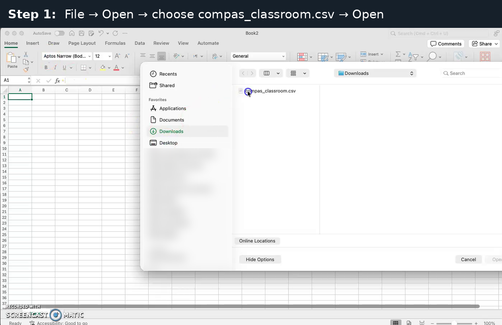
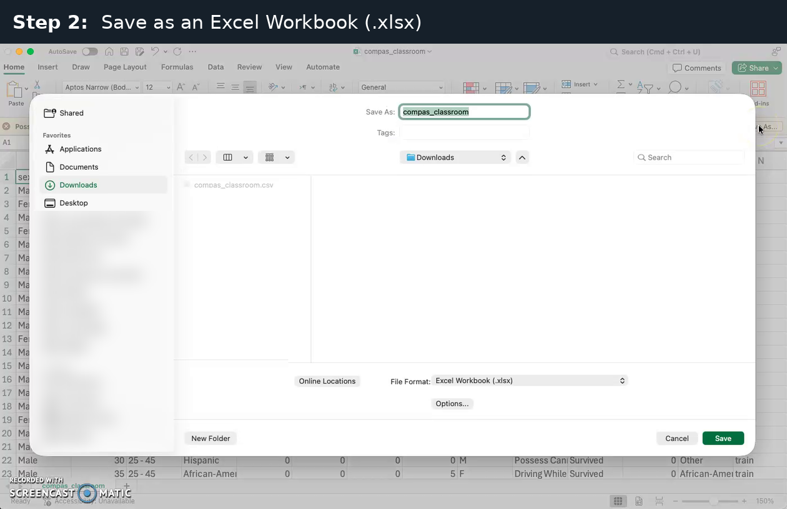
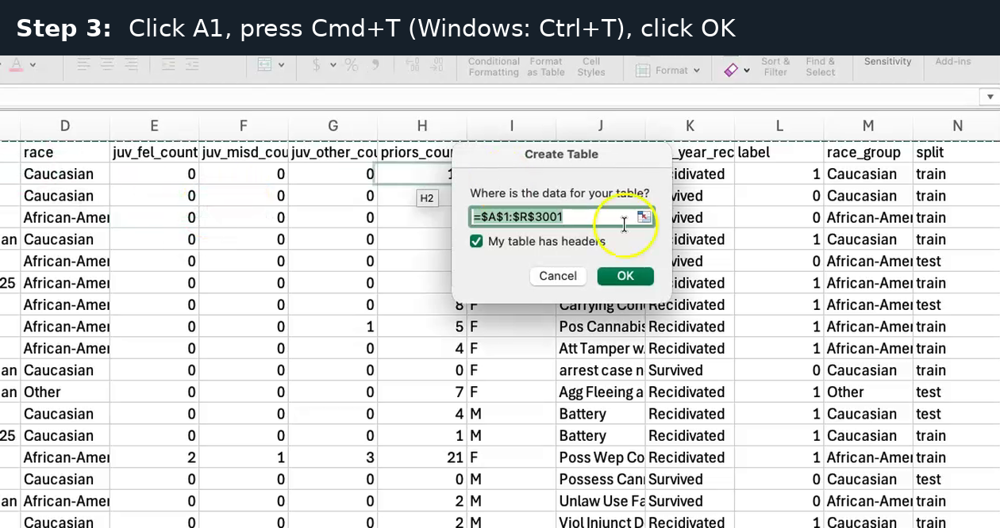
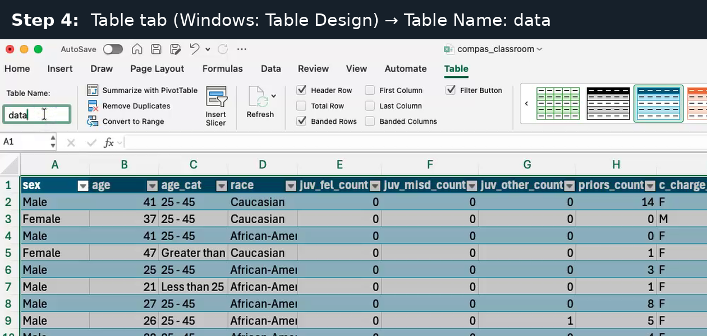
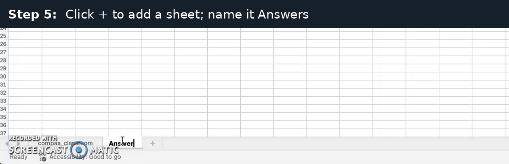
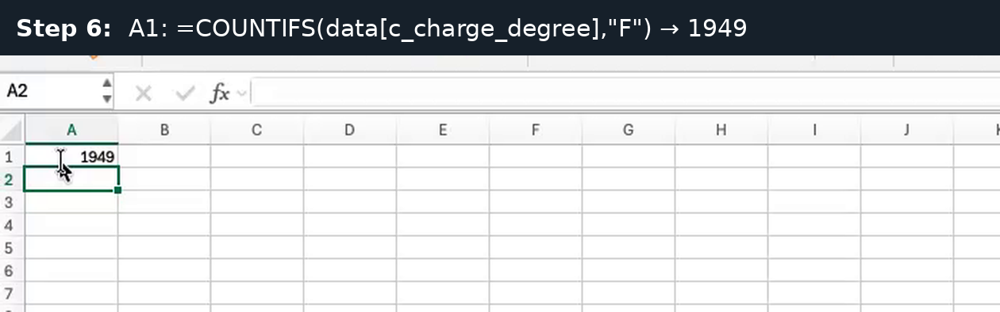
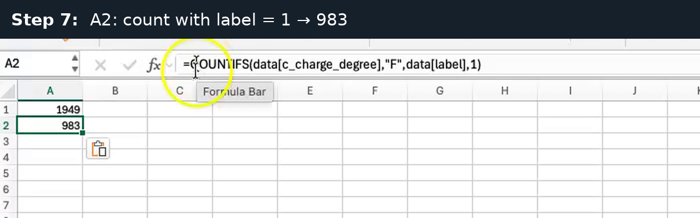
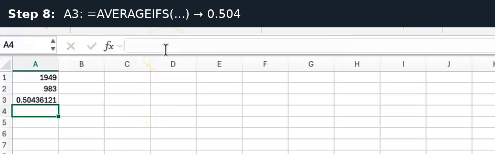
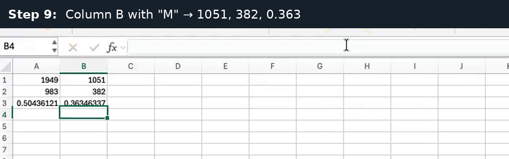

Algorithmic Fairness · Session 1 · about 5 minutes
c_charge_degree group (F = felony, M = misdemeanor) and those with label = 1.How to move: press the right arrow key or the space bar for the next page. Press Esc to see all pages.
Choose File → Open, select compas_classroom.csv in your Downloads folder, and click Open.

You should see: the data opens, with the column names in row 1 and one person per row.
Choose File → Save As, set File Format to Excel Workbook (.xlsx), and click Save.

Why: a plain .csv file cannot keep the table or the Answers sheet.
Click cell A1, press Cmd+T (Windows: Ctrl+T), keep “My table has headers” checked, and click OK.

You should see: the range $A$1:$R$3001, which is the header row plus 3000 people.
On the Table tab (Windows: Table Design tab), change Table Name from Table1 to data and press Enter.

You should see: colored table rows and filter arrows in the header row.
Click + at the bottom to add a sheet, then double-click its tab and name it Answers.

You should see: a tab named Answers next to the compas_classroom tab.
In cell A1 of Answers, paste this formula and press Enter:
=COUNTIFS(data[c_charge_degree],"F")
You should see: 1949, the number of people charged with a felony (F).
In A2, paste this formula and press Enter:
=COUNTIFS(data[c_charge_degree],"F",data[label],1)
You should see: 983, the people in F who were rearrested (label = 1).
In A3, paste this formula and press Enter:
=AVERAGEIFS(data[label],data[c_charge_degree],"F")
You should see: 0.50436121, about 0.504. (Home → Decrease Decimal, or format as a percentage, to show fewer digits.)
Paste the three formulas in column B (B1, B2, B3), with “M” instead of “F”:
=COUNTIFS(data[c_charge_degree],"M")
=COUNTIFS(data[c_charge_degree],"M",data[label],1)
=AVERAGEIFS(data[label],data[c_charge_degree],"M")
You should see: 1051, 382 and 0.36346337 (about 0.363).
| c_charge_degree | People | Recidivated (label = 1) | Base rate |
|---|---|---|---|
| F (felony) | 1,949 | 983 | 0.504 (50.4%) |
| M (misdemeanor) | 1,051 | 382 | 0.363 (36.3%) |
Recidivated means rearrested within two years. Survived means not rearrested.
Compare with your partner: Excel and CODAP should agree exactly.
| What you see | Why | Fix |
|---|---|---|
#NAME? |
Table not named data, or curly quotes pasted from Word |
Rename the table; retype the quotes |
0 |
Group name spelled differently, e.g. “f” vs “F” | Match the spelling exactly |
| The CSV opens as one column | Regional settings use ; |
Data → From Text/CSV → Comma |
| Answers sheet or table gone after closing | The file was saved as .csv | Save As → Excel Workbook |
| A long decimal like 0.50436121 | That’s fine | It rounds to 0.504 |
Use the same three formulas with your protected attribute instead of c_charge_degree, and your two groups instead of “F” and “M”:
race_group, with “African-American” and “Caucasian”.sex, with “Female” and “Male”.Remember to save your own file as .xlsx and make it a table named data too.
Type your results into the handout as numbers, not formulas.
Optional: watch all the steps in one silent video (about 100 s). Everything in the video is in the steps above.